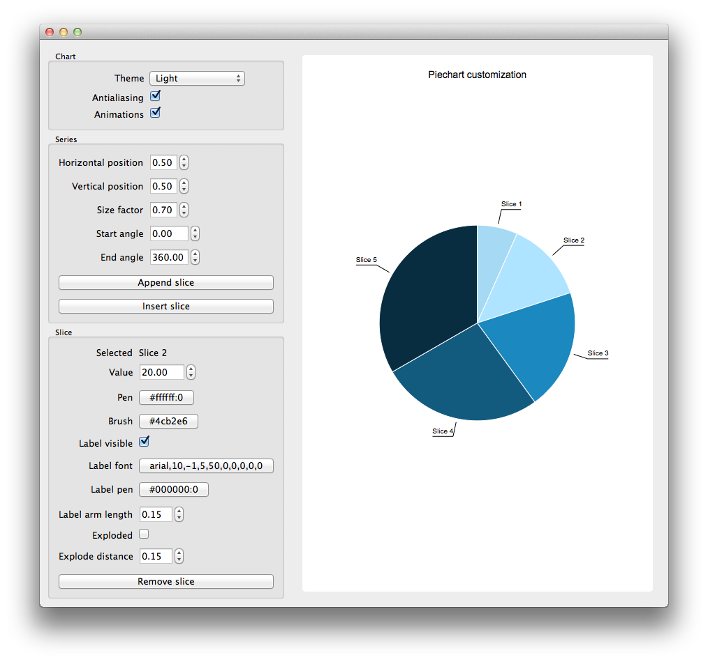

Pie Chart Customization Example

Running the Example
To run the example from Qt Creator, open the Welcome mode and select the example from Examples. For more information, visit Building and Running an Example.
Files:
- piechartcustomization/brushtool.cpp
- piechartcustomization/brushtool.h
- piechartcustomization/customslice.cpp
- piechartcustomization/customslice.h
- piechartcustomization/mainwidget.cpp
- piechartcustomization/mainwidget.h
- piechartcustomization/pentool.cpp
- piechartcustomization/pentool.h
- piechartcustomization/main.cpp
- piechartcustomization/piechartcustomization.pro